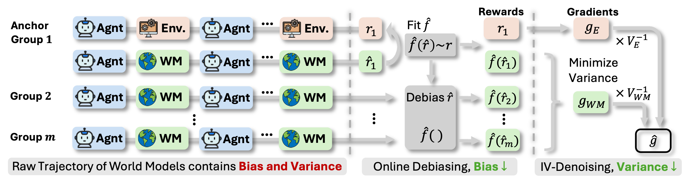
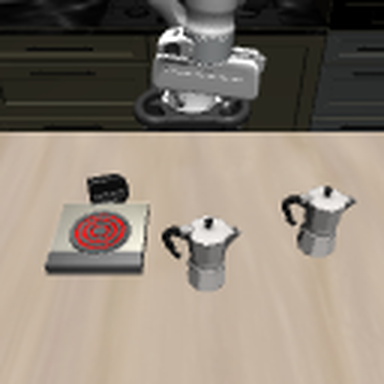
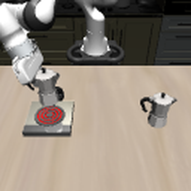

arXiv 2608.12564
1University of Illinois Urbana-Champaign 2Amazon
†Work done during an internship at Amazon. *Corresponding authors.
An AutoResearch agent writes code, runs it, and learns from what comes back. RL is the natural way to train one, but the two halves of a trajectory do not scale alike. Generation batches, so extra trajectories are nearly free. Execution does not: every candidate solution needs its own sandbox on real machine time. Past a certain scale, grading is the training cost.
WMRL hands the grading to a world model, which reads the task and the submitted solution and predicts the outcome in a few forward passes. Now grading batches like generation, and the bottleneck is gone. The predicted reward is imperfect, though, and the imperfection splits cleanly into a systematic bias and a zero-mean noise. Both show up in the convergence bound as their own error term.
To pay that bill, WMRL keeps about a tenth of groups graded by real execution as an anchor signal, and spends it on one mechanism per term: Online Debiasing for the bias, Inverse-Variance Denoising for the noise. We prove both strictly improve the convergence guarantee, and show they hold up in practice at 4B and 9B, on two held-out benchmarks, and again on embodied VLA post-training.
The world model takes the same input the sandbox would and returns a predicted score, so the RL pipeline runs unchanged with cheap rewards in place of measured ones.
What that costs is visible once the predicted score is written as r̂(τ) = r(τ) + b(τ) + ξ(τ), splitting the error into a systematic bias b and a zero-mean noise ξ. They enter the convergence bound as two separate terms, O(B2) and O(σ2). Estimating either one needs ground truth, so WMRL keeps a thin stream of it. About 10% of groups are graded by both the world model and real execution, and those score pairs drive the two mechanisms below.

The anchor pairs show how far the world model has drifted from the truth. We fit a monotone map to them by isotonic regression and push every predicted score through it before advantages are formed. Refitting each step keeps the map current as the drift moves.
Noise cannot be estimated pointwise, so we suppress it instead. The anchor stream is clean but scarce; the world model stream is noisy but abundant. Both estimate the same gradient, so we fuse them by inverse variance, which lands strictly below either stream alone.
WMRL cuts the training compute of real-execution GRPO by 3.1× and 3.4×, and still scores higher on every benchmark average. The post-trained agents also beat much larger off-the-shelf ones: our 4B passes the 48B agent, our 9B passes the 120B agent.
Main results. Leaderboard percentile (%), higher is better. Both benchmarks hold out tasks never trained on. GPU-hours count total training compute.
| Method | GPU-hours | MLE-Dojo (test) | DSBench | |||||||
|---|---|---|---|---|---|---|---|---|---|---|
| Tab | Text | Img | Avg | Bin-Cls | Multi-Cls | Regress | Other | Avg | ||
| Baseline Models | ||||||||||
| Qwen3.5-4B | — | 13.7 | 8.0 | 0.2 | 7.3 | 21.9 | 11.8 | 25.8 | 8.8 | 17.1 |
| Qwen3.5-9B | — | 17.4 | 8.1 | 3.4 | 9.6 | 29.1 | 16.0 | 36.3 | 14.1 | 23.9 |
| Large Agents | ||||||||||
| Kimi-48B-A3B | — | 12.3 | 10.1 | 2.0 | 8.1 | 20.3 | 10.0 | 29.0 | 9.8 | 17.3 |
| Nemotron-120B-A12B | — | 35.1 | 18.8 | 7.6 | 20.5 | 38.7 | 26.6 | 40.7 | 20.6 | 31.7 |
| RL in Real Environment | ||||||||||
| Qwen3.5-4B-GRPO | 883 | 24.8 | 16.6 | 4.3 | 15.2 | 34.3 | 17.8 | 28.3 | 22.4 | 25.7 |
| Qwen3.5-9B-GRPO | 1174 | 33.3 | 17.1 | 5.9 | 18.8 | 40.9 | 26.8 | 40.4 | 16.7 | 31.2 |
| RL with Pure World Model | ||||||||||
| Qwen3.5-4B-WM | 269 | 21.2 | 14.6 | 3.0 | 12.9 | 27.1 | 16.9 | 32.5 | 16.0 | 23.1 |
| Qwen3.5-9B-WM | 330 | 28.0 | 15.9 | 4.5 | 16.1 | 35.4 | 21.8 | 37.9 | 16.9 | 28.0 |
| WMRL (ours) | ||||||||||
| Qwen3.5-4B-Ours | 286 | 28.0↑3.2 | 16.1↓0.5 | 5.2↑0.9 | 16.4↑1.2 | 35.8↑1.5 | 22.3↑4.5 | 32.3↑4.0 | 24.7↑2.3 | 28.8↑3.1 |
| Qwen3.5-9B-Ours | 349 | 38.0↑4.7 | 19.4↑2.3 | 7.4↑1.5 | 21.6↑2.8 | 45.4↑4.5 | 26.9↑0.1 | 39.2↓1.2 | 19.8↑3.1 | 32.8↑1.6 |
Scores are per-task avg@8, averaged within each category. Avg is the mean over categories. Bold marks the best value per column; green and red arrows mark the gain and drop of WMRL over same-scale GRPO.
Every ablation run consumes the same two reward streams at the same ratio, and differs only in which correction is active. The plain mixture in the first row stays below real-execution GRPO on every column. Denoising alone adds 0.9 to 1.7 points, debiasing alone adds 2.2 to 2.8, and the larger debiasing share matches the theory, where bias enters the bound at full size while noise enters damped by the step size. Together they lift every column by 2.9 to 4.8 points, more than either alone.
| Online Debiasing |
Inverse-Variance Denoising |
4B Agent | 9B Agent | ||
|---|---|---|---|---|---|
| MLE | DS | MLE | DS | ||
| ○ | ○ | 13.5 | 25.3 | 16.8 | 29.5 |
| ○ | ● | 14.9 | 26.2 | 18.0 | 31.2 |
| ● | ○ | 15.7 | 28.1 | 19.4 | 31.7 |
| ● | ● | 16.4↑2.9 | 28.8↑3.5 | 21.6↑4.8 | 32.8↑3.3 |
A filled circle marks the correction as active. The last row recovers WMRL, and its green arrows give the gain over the uncorrected first row.
Neither mechanism is specific to AutoResearch, so we apply the same recipe to VLA post-training on LIBERO-Long. Robometer scores eight frames sampled from each rollout as the dense reward, and the single sparse success the environment returns at the end serves as the anchor.
Either signal alone barely moves the policy. RL on the sparse outcome adds 0.9 points over the SFT baseline, RL on the raw world model signal adds 1.8. WMRL combines the two and lifts overall success by 3.8 points, with the largest margin on unseen initial states.


VLA post-training on LIBERO-Long. Success rate (%), higher is better. All RL rows share the SFT initialization.
| Method | In-Domain | Out-of-Distribution | Overall | ||||
|---|---|---|---|---|---|---|---|
| Avg | Best@8 | All@8 | Avg | Best@8 | All@8 | ||
| Baseline Models | |||||||
| MiniVLA-1B | 5.6 | 5.6 | 5.6 | 2.9 | 2.9 | 2.9 | 3.8 |
| MiniVLA-1B-SFT | 37.3 | 41.3 | 33.1 | 37.5 | 44.7 | 32.1 | 37.4 |
| RL in Real Environment | |||||||
| MiniVLA-1B-GRPO | 39.3 | 48.8 | 34.4 | 37.8 | 45.3 | 31.2 | 38.3 |
| RL with Pure World Model | |||||||
| MiniVLA-1B-WM | 39.1 | 45.6 | 34.4 | 39.3 | 45.6 | 34.1 | 39.2 |
| WMRL (ours) | |||||||
| MiniVLA-1B-Ours | 41.2↑1.9 | 47.5↓1.3 | 37.5↑3.1 | 41.2↑3.4 | 48.8↑3.5 | 37.1↑5.9 | 41.2↑2.9 |
Overall averages over every initial state, seen and unseen. Best@8 counts at least one success of the eight, All@8 counts all eight. Bold marks the best value per column; arrows mark the gain and drop of WMRL over MiniVLA-1B-GRPO.
@article{yang2026wmrl,
title = {Scaling Automatic Research Agents via World Models},
author = {Yang, Xiyuan and Sarwar, Sheikh and Cheng, Jingru and Shi, Zhan and
Li, Duanshun and Chen, Huiyuan and Zhang, Haiyang and Fan, Xing and
Guo, Chenlei and He, Jingrui and Liao, Zhenyu},
journal = {arXiv preprint arXiv:2608.12564},
year = {2026}
}